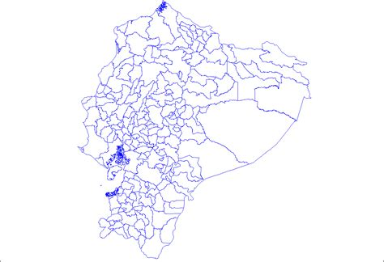
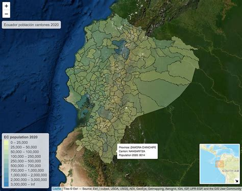
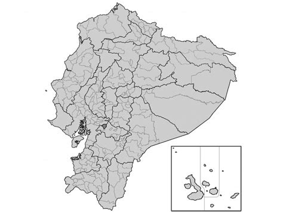
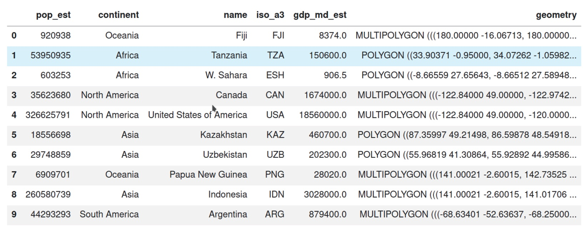
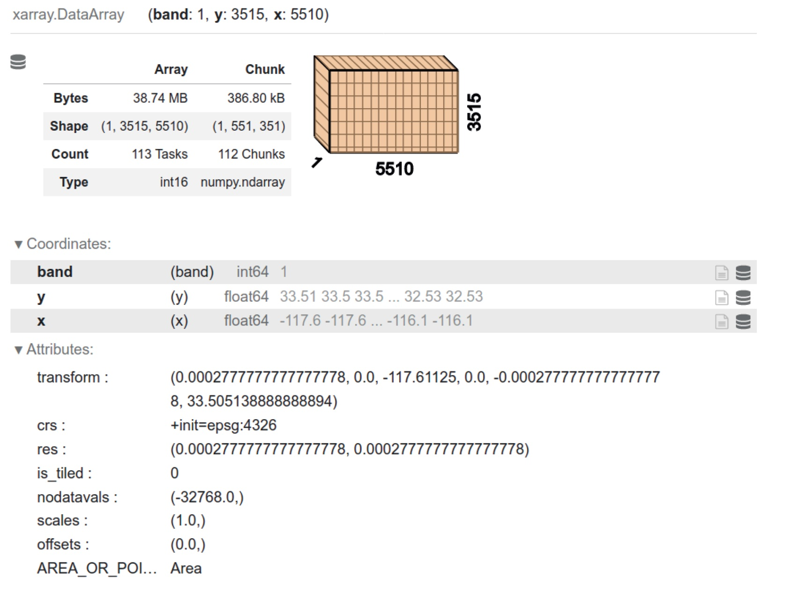
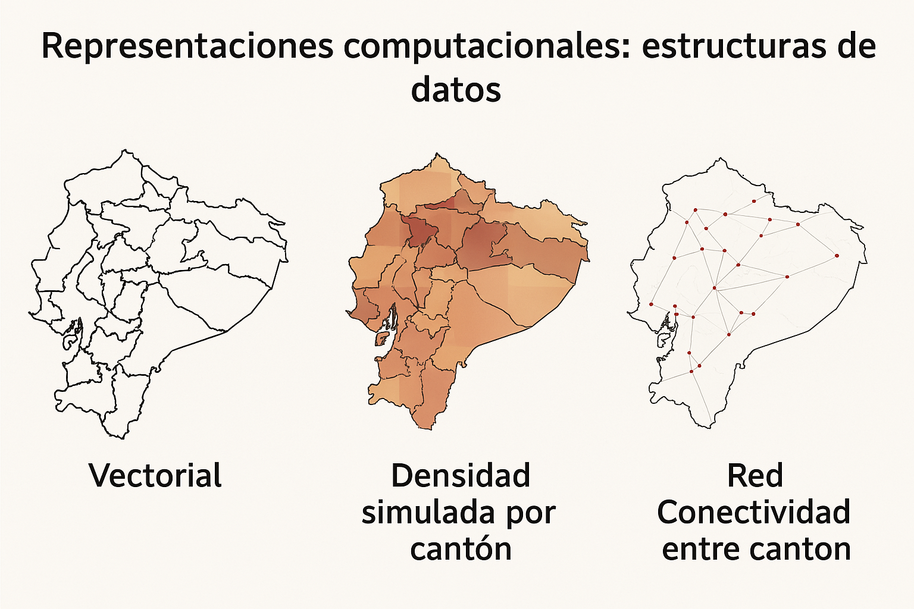
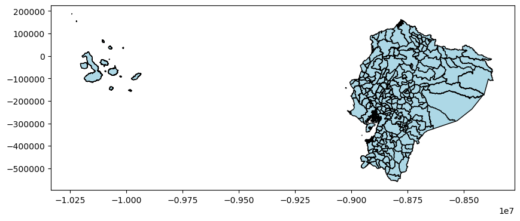

6. Fundamentos#
6.1. Pensamiento geográfico#
Los datos geográficos son ubicuos
Todo objeto o fenómeno tiene una ubicación en el espacio-tiempo.
La geografía no solo se trata de dónde están las cosas, sino de cómo se relacionan entre sí.
Relaciones espaciales como valor añadido
La información espacial permite contextualizar observaciones.
Facilita la conexión de datos entre sí y con fuentes externas.
Primera ley de la geografía (Tobler)
“Todo está relacionado con todo lo demás, pero las cosas cercanas están más relacionadas que las cosas distantes.”
Esto aplica tanto en espacio como en tiempo.
Importancia de la ubicación y la relación
Pensar geográficamente implica entender:
Dónde están las cosas.
Cómo están relacionadas entre sí.
Modelos y mapas como simplificaciones útiles
George Box: “Todos los modelos están mal, pero algunos son útiles.”
Keith Ord (parafraseado): “Todos los mapas están mal, pero algunos son útiles.”
Los modelos y mapas ayudan a resumir y comunicar realidades complejas.
Distinción clave en el libro
Modelo de datos: Representación conceptual de un fenómeno geográfico.
Estructura de datos: Representación computacional de los datos geográficos (tema de la sección 1.3).
6.2. Modelos conceptuales#
Desafío de representar conceptos geográficos
Las representaciones conceptuales de fenómenos geográficos son complejas.
Por ejemplo, la densidad poblacional suele representarse como un promedio por unidad de área, aunque en realidad las personas son entidades discretas que se mueven en el espacio-tiempo.
Tres modelos conceptuales clásicos
Objetos (Objects): Entidades discretas que ocupan una posición específica en el espacio y el tiempo (ej. una persona, una parcela).
Campos (Fields): Superficies continuas que pueden ser medidas en cualquier ubicación del espacio-tiempo (ej. temperatura, altitud, densidad como superficie).
Redes (Networks): Conjuntos de conexiones entre objetos o posiciones dentro de un campo (ej. rutas de buses, calles, redes de distribución).
Importancia del modelo elegido
El modelo conceptual determina cómo se definen las relaciones espaciales:
En objetos: la proximidad espacial define relaciones.
En redes: importa la conectividad más que la distancia.
En campos: se debe considerar la interpolación entre observaciones.
Relación entre modelo y realidad
Lo que medimos puede no reflejar exactamente cómo funciona el proceso.
Los modelos ayudan a responder preguntas específicas, aunque simplifican la realidad.
Asociación entre mapas y modelos conceptuales
A continuación se muestra cómo se relacionan los modelos conceptuales de objetos, campos y redes con los datos de cantones de Ecuador.
Modelo Conceptual |
Descripción |
Ejemplo con |
Visualización |
|---|---|---|---|
Objetos |
Entidades discretas que ocupan una posición específica en el espacio y el tiempo. |
Cada cantón representado como una unidad poligonal con atributos (nombre, población, etc.). |
 |
Campos |
Superficies continuas que pueden ser medidas en cualquier punto del espacio. |
Densidad poblacional interpolada sobre el territorio nacional (por ejemplo, habitantes/km² por cantón como superficie continua). |
 |
Redes |
Conjuntos de conexiones entre objetos o posiciones. |
Red de carreteras entre cantones, rutas de transporte, flujos migratorios o comerciales. |
 |
¿Cómo aplicar cada modelo?
Objetos: análisis por unidad administrativa (agregaciones, estadísticas).
Campos: interpolación, análisis de fenómenos continuos (temperatura, densidad).
Redes: estudio de movilidad, rutas, conectividad y accesibilidad.
📁 Fuente de datos:
2012_nxcantones.zip
6.3. Representaciones computacionales: estructuras de datos#
De modelos conceptuales a estructuras computacionales
Los modelos de datos (objetos, campos, redes) son representaciones conceptuales.
Para analizarlos computacionalmente, deben traducirse a estructuras de datos.
Estas estructuras forman el puente entre el pensamiento geográfico y la implementación técnica.
Estructuras principales: tablas, superficies y grafos
Modelo de datos |
Estructura de datos |
Descripción |
|---|---|---|
Objetos |
Geographic tables ( |
Filas = entidades geográficas, columnas = atributos. La geometría es una columna más. |
Campos |
Superficies o cubos ( |
Representan fenómenos continuos como temperatura o densidad. Almacenados como matrices. |
Redes |
Grafos espaciales ( |
Representan relaciones topológicas entre entidades geográficas. |

Figura: una tabla geográfica como GeoDataFrame
Figura: Estructuras de datos de superficie para modelos de datos de campo
Figura: resumen estructuras de datosInfluencia de la tecnología
La tecnología que usamos moldea cómo pensamos los modelos espaciales.
Herramientas como QGIS y ArcGIS han estandarizado estructuras tipo tabla y ráster.
Cuidado con la “tecnología limitante”: adoptar estructuras por conveniencia puede limitar el análisis.
La tabla geográfica (GeoTable)
Estructura híbrida que integra datos espaciales y atributos en un solo marco.
Ejemplos:
GeoDataFrameen Python (geopandas)sfen RPostGISen bases de datos
Tendencias emergentes
Nuevas estructuras como:
Grillas hexagonales (
H3de Uber)Cubos espaciales (
S2de Google)
Permiten representar datos espaciales de forma más eficiente y escalable.
Estas estructuras computacionales hacen posible aplicar la lógica geográfica en contextos de análisis de datos masivos y en tiempo real.
import geopandas as gpd
import matplotlib.pyplot as plt
import contextily as ctx
import networkx as nx
from shapely.geometry import Point
import numpy as np
from io import BytesIO
import zipfile
import requests
from sklearn.neighbors import NearestNeighbors
# 1. Descargar shapefile directamente desde GitHub
url = "https://github.com/vmoprojs/DataLectures/raw/master/SpatialData/2012_nxcantones.zip"
response = requests.get(url)
zip_bytes = BytesIO(response.content)
# 2. Extraer y leer el shapefile
with zipfile.ZipFile(zip_bytes, "r") as z:
shp_name = [f for f in z.namelist() if f.endswith(".shp")][0]
z.extractall("tmp_shapefile")
gdf = gpd.read_file("tmp_shapefile/" + shp_name)
# 3. Reproyección a Web Mercator para usar contextily
gdf = gdf.to_crs(epsg=3857)
# ---------- 1. MODELO DE OBJETOS ----------
fig, ax = plt.subplots(figsize=(10, 10))
gdf.plot(ax=ax, edgecolor='black', facecolor='lightblue')
ctx.add_basemap(ax, source=ctx.providers.CartoDB.Positron)
ax.set_title("Modelo de Objetos: Cantones de Ecuador")
plt.axis('off')
plt.show()
# ---------- 2. MODELO DE CAMPOS ----------
np.random.seed(0)
gdf["densidad_sim"] = np.random.uniform(20, 300, size=len(gdf))
fig, ax = plt.subplots(figsize=(10, 10))
gdf.plot(column="densidad_sim", cmap="OrRd", legend=True, ax=ax, edgecolor="black")
ctx.add_basemap(ax, source=ctx.providers.CartoDB.Positron)
ax.set_title("Modelo de Campos: Densidad simulada por cantón")
plt.axis('off')
plt.show()
# ---------- 3. MODELO DE REDES ----------
centroids = gdf.geometry.centroid
points = [Point(xy) for xy in zip(centroids.x, centroids.y)]
G = nx.Graph()
coords = np.array([[p.x, p.y] for p in points])
knn = NearestNeighbors(n_neighbors=4).fit(coords)
distances, indices = knn.kneighbors(coords)
for i, neighbors in enumerate(indices):
for j in neighbors[1:]: # excluir a sí mismo
G.add_edge(i, j)
fig, ax = plt.subplots(figsize=(10, 10))
gdf.plot(ax=ax, facecolor="white", edgecolor="gray")
pos = {i: (p.x, p.y) for i, p in enumerate(points)}
nx.draw_networkx_edges(G, pos, ax=ax, alpha=0.5)
nx.draw_networkx_nodes(G, pos, ax=ax, node_size=10, node_color="red")
ctx.add_basemap(ax, source=ctx.providers.CartoDB.Positron)
ax.set_title("Modelo de Redes: Conectividad entre cantones")
plt.axis('off')
plt.show()
---------------------------------------------------------------------------
SSLEOFError Traceback (most recent call last)
File /opt/anaconda3/envs/geo_env/lib/python3.12/site-packages/urllib3/connectionpool.py:464, in HTTPConnectionPool._make_request(self, conn, method, url, body, headers, retries, timeout, chunked, response_conn, preload_content, decode_content, enforce_content_length)
463 try:
--> 464 self._validate_conn(conn)
465 except (SocketTimeout, BaseSSLError) as e:
File /opt/anaconda3/envs/geo_env/lib/python3.12/site-packages/urllib3/connectionpool.py:1093, in HTTPSConnectionPool._validate_conn(self, conn)
1092 if conn.is_closed:
-> 1093 conn.connect()
1095 # TODO revise this, see https://github.com/urllib3/urllib3/issues/2791
File /opt/anaconda3/envs/geo_env/lib/python3.12/site-packages/urllib3/connection.py:741, in HTTPSConnection.connect(self)
739 server_hostname_rm_dot = server_hostname.rstrip(".")
--> 741 sock_and_verified = _ssl_wrap_socket_and_match_hostname(
742 sock=sock,
743 cert_reqs=self.cert_reqs,
744 ssl_version=self.ssl_version,
745 ssl_minimum_version=self.ssl_minimum_version,
746 ssl_maximum_version=self.ssl_maximum_version,
747 ca_certs=self.ca_certs,
748 ca_cert_dir=self.ca_cert_dir,
749 ca_cert_data=self.ca_cert_data,
750 cert_file=self.cert_file,
751 key_file=self.key_file,
752 key_password=self.key_password,
753 server_hostname=server_hostname_rm_dot,
754 ssl_context=self.ssl_context,
755 tls_in_tls=tls_in_tls,
756 assert_hostname=self.assert_hostname,
757 assert_fingerprint=self.assert_fingerprint,
758 )
759 self.sock = sock_and_verified.socket
File /opt/anaconda3/envs/geo_env/lib/python3.12/site-packages/urllib3/connection.py:920, in _ssl_wrap_socket_and_match_hostname(sock, cert_reqs, ssl_version, ssl_minimum_version, ssl_maximum_version, cert_file, key_file, key_password, ca_certs, ca_cert_dir, ca_cert_data, assert_hostname, assert_fingerprint, server_hostname, ssl_context, tls_in_tls)
918 server_hostname = normalized
--> 920 ssl_sock = ssl_wrap_socket(
921 sock=sock,
922 keyfile=key_file,
923 certfile=cert_file,
924 key_password=key_password,
925 ca_certs=ca_certs,
926 ca_cert_dir=ca_cert_dir,
927 ca_cert_data=ca_cert_data,
928 server_hostname=server_hostname,
929 ssl_context=context,
930 tls_in_tls=tls_in_tls,
931 )
933 try:
File /opt/anaconda3/envs/geo_env/lib/python3.12/site-packages/urllib3/util/ssl_.py:480, in ssl_wrap_socket(sock, keyfile, certfile, cert_reqs, ca_certs, server_hostname, ssl_version, ciphers, ssl_context, ca_cert_dir, key_password, ca_cert_data, tls_in_tls)
478 context.set_alpn_protocols(ALPN_PROTOCOLS)
--> 480 ssl_sock = _ssl_wrap_socket_impl(sock, context, tls_in_tls, server_hostname)
481 return ssl_sock
File /opt/anaconda3/envs/geo_env/lib/python3.12/site-packages/urllib3/util/ssl_.py:524, in _ssl_wrap_socket_impl(sock, ssl_context, tls_in_tls, server_hostname)
522 return SSLTransport(sock, ssl_context, server_hostname)
--> 524 return ssl_context.wrap_socket(sock, server_hostname=server_hostname)
File /opt/anaconda3/envs/geo_env/lib/python3.12/ssl.py:455, in SSLContext.wrap_socket(self, sock, server_side, do_handshake_on_connect, suppress_ragged_eofs, server_hostname, session)
449 def wrap_socket(self, sock, server_side=False,
450 do_handshake_on_connect=True,
451 suppress_ragged_eofs=True,
452 server_hostname=None, session=None):
453 # SSLSocket class handles server_hostname encoding before it calls
454 # ctx._wrap_socket()
--> 455 return self.sslsocket_class._create(
456 sock=sock,
457 server_side=server_side,
458 do_handshake_on_connect=do_handshake_on_connect,
459 suppress_ragged_eofs=suppress_ragged_eofs,
460 server_hostname=server_hostname,
461 context=self,
462 session=session
463 )
File /opt/anaconda3/envs/geo_env/lib/python3.12/ssl.py:1041, in SSLSocket._create(cls, sock, server_side, do_handshake_on_connect, suppress_ragged_eofs, server_hostname, context, session)
1040 raise ValueError("do_handshake_on_connect should not be specified for non-blocking sockets")
-> 1041 self.do_handshake()
1042 except:
File /opt/anaconda3/envs/geo_env/lib/python3.12/ssl.py:1319, in SSLSocket.do_handshake(self, block)
1318 self.settimeout(None)
-> 1319 self._sslobj.do_handshake()
1320 finally:
SSLEOFError: [SSL: UNEXPECTED_EOF_WHILE_READING] EOF occurred in violation of protocol (_ssl.c:1010)
During handling of the above exception, another exception occurred:
SSLError Traceback (most recent call last)
File /opt/anaconda3/envs/geo_env/lib/python3.12/site-packages/urllib3/connectionpool.py:787, in HTTPConnectionPool.urlopen(self, method, url, body, headers, retries, redirect, assert_same_host, timeout, pool_timeout, release_conn, chunked, body_pos, preload_content, decode_content, **response_kw)
786 # Make the request on the HTTPConnection object
--> 787 response = self._make_request(
788 conn,
789 method,
790 url,
791 timeout=timeout_obj,
792 body=body,
793 headers=headers,
794 chunked=chunked,
795 retries=retries,
796 response_conn=response_conn,
797 preload_content=preload_content,
798 decode_content=decode_content,
799 **response_kw,
800 )
802 # Everything went great!
File /opt/anaconda3/envs/geo_env/lib/python3.12/site-packages/urllib3/connectionpool.py:488, in HTTPConnectionPool._make_request(self, conn, method, url, body, headers, retries, timeout, chunked, response_conn, preload_content, decode_content, enforce_content_length)
487 new_e = _wrap_proxy_error(new_e, conn.proxy.scheme)
--> 488 raise new_e
490 # conn.request() calls http.client.*.request, not the method in
491 # urllib3.request. It also calls makefile (recv) on the socket.
SSLError: [SSL: UNEXPECTED_EOF_WHILE_READING] EOF occurred in violation of protocol (_ssl.c:1010)
The above exception was the direct cause of the following exception:
MaxRetryError Traceback (most recent call last)
File /opt/anaconda3/envs/geo_env/lib/python3.12/site-packages/requests/adapters.py:667, in HTTPAdapter.send(self, request, stream, timeout, verify, cert, proxies)
666 try:
--> 667 resp = conn.urlopen(
668 method=request.method,
669 url=url,
670 body=request.body,
671 headers=request.headers,
672 redirect=False,
673 assert_same_host=False,
674 preload_content=False,
675 decode_content=False,
676 retries=self.max_retries,
677 timeout=timeout,
678 chunked=chunked,
679 )
681 except (ProtocolError, OSError) as err:
File /opt/anaconda3/envs/geo_env/lib/python3.12/site-packages/urllib3/connectionpool.py:841, in HTTPConnectionPool.urlopen(self, method, url, body, headers, retries, redirect, assert_same_host, timeout, pool_timeout, release_conn, chunked, body_pos, preload_content, decode_content, **response_kw)
839 new_e = ProtocolError("Connection aborted.", new_e)
--> 841 retries = retries.increment(
842 method, url, error=new_e, _pool=self, _stacktrace=sys.exc_info()[2]
843 )
844 retries.sleep()
File /opt/anaconda3/envs/geo_env/lib/python3.12/site-packages/urllib3/util/retry.py:519, in Retry.increment(self, method, url, response, error, _pool, _stacktrace)
518 reason = error or ResponseError(cause)
--> 519 raise MaxRetryError(_pool, url, reason) from reason # type: ignore[arg-type]
521 log.debug("Incremented Retry for (url='%s'): %r", url, new_retry)
MaxRetryError: HTTPSConnectionPool(host='a.basemaps.cartocdn.com', port=443): Max retries exceeded with url: /light_all/6/15/31.png (Caused by SSLError(SSLEOFError(8, '[SSL: UNEXPECTED_EOF_WHILE_READING] EOF occurred in violation of protocol (_ssl.c:1010)')))
During handling of the above exception, another exception occurred:
SSLError Traceback (most recent call last)
Cell In[1], line 29
27 fig, ax = plt.subplots(figsize=(10, 10))
28 gdf.plot(ax=ax, edgecolor='black', facecolor='lightblue')
---> 29 ctx.add_basemap(ax, source=ctx.providers.CartoDB.Positron)
30 ax.set_title("Modelo de Objetos: Cantones de Ecuador")
31 plt.axis('off')
File /opt/anaconda3/envs/geo_env/lib/python3.12/site-packages/contextily/plotting.py:134, in add_basemap(ax, zoom, source, interpolation, attribution, attribution_size, reset_extent, crs, resampling, zoom_adjust, **extra_imshow_args)
130 left, right, bottom, top = _reproj_bb(
131 left, right, bottom, top, crs, "epsg:3857"
132 )
133 # Download image
--> 134 image, extent = bounds2img(
135 left,
136 bottom,
137 right,
138 top,
139 zoom=zoom,
140 source=source,
141 ll=False,
142 zoom_adjust=zoom_adjust,
143 )
144 # Warping
145 if crs is not None:
File /opt/anaconda3/envs/geo_env/lib/python3.12/site-packages/contextily/tile.py:283, in bounds2img(w, s, e, n, zoom, source, ll, wait, max_retries, n_connections, use_cache, zoom_adjust)
279 preferred_backend = (
280 "threads" if (n_connections == 1 or not use_cache) else "processes"
281 )
282 fetch_tile_fn = memory.cache(_fetch_tile) if use_cache else _fetch_tile
--> 283 arrays = Parallel(n_jobs=n_connections, prefer=preferred_backend)(
284 delayed(fetch_tile_fn)(tile_url, wait, max_retries) for tile_url in tile_urls
285 )
286 # merge downloaded tiles
287 merged, extent = _merge_tiles(tiles, arrays)
File /opt/anaconda3/envs/geo_env/lib/python3.12/site-packages/joblib/parallel.py:1986, in Parallel.__call__(self, iterable)
1984 output = self._get_sequential_output(iterable)
1985 next(output)
-> 1986 return output if self.return_generator else list(output)
1988 # Let's create an ID that uniquely identifies the current call. If the
1989 # call is interrupted early and that the same instance is immediately
1990 # reused, this id will be used to prevent workers that were
1991 # concurrently finalizing a task from the previous call to run the
1992 # callback.
1993 with self._lock:
File /opt/anaconda3/envs/geo_env/lib/python3.12/site-packages/joblib/parallel.py:1914, in Parallel._get_sequential_output(self, iterable)
1912 self.n_dispatched_batches += 1
1913 self.n_dispatched_tasks += 1
-> 1914 res = func(*args, **kwargs)
1915 self.n_completed_tasks += 1
1916 self.print_progress()
File /opt/anaconda3/envs/geo_env/lib/python3.12/site-packages/joblib/memory.py:607, in MemorizedFunc.__call__(self, *args, **kwargs)
605 def __call__(self, *args, **kwargs):
606 # Return the output, without the metadata
--> 607 return self._cached_call(args, kwargs, shelving=False)[0]
File /opt/anaconda3/envs/geo_env/lib/python3.12/site-packages/joblib/memory.py:562, in MemorizedFunc._cached_call(self, args, kwargs, shelving)
556 self.warn(
557 f"Computing func {func_name}, argument hash {args_id} "
558 f"in location {location}"
559 )
561 # Returns the output but not the metadata
--> 562 return self._call(call_id, args, kwargs, shelving)
File /opt/anaconda3/envs/geo_env/lib/python3.12/site-packages/joblib/memory.py:832, in MemorizedFunc._call(self, call_id, args, kwargs, shelving)
830 self._before_call(args, kwargs)
831 start_time = time.time()
--> 832 output = self.func(*args, **kwargs)
833 return self._after_call(call_id, args, kwargs, shelving, output, start_time)
File /opt/anaconda3/envs/geo_env/lib/python3.12/site-packages/contextily/tile.py:313, in _fetch_tile(tile_url, wait, max_retries)
312 def _fetch_tile(tile_url, wait, max_retries):
--> 313 array = _retryer(tile_url, wait, max_retries)
314 return array
File /opt/anaconda3/envs/geo_env/lib/python3.12/site-packages/contextily/tile.py:452, in _retryer(tile_url, wait, max_retries)
432 """
433 Retry a url many times in attempt to get a tile and read the image
434
(...)
449 array of the tile
450 """
451 try:
--> 452 request = requests.get(tile_url, headers={"user-agent": USER_AGENT})
453 request.raise_for_status()
454 with io.BytesIO(request.content) as image_stream:
File /opt/anaconda3/envs/geo_env/lib/python3.12/site-packages/requests/api.py:73, in get(url, params, **kwargs)
62 def get(url, params=None, **kwargs):
63 r"""Sends a GET request.
64
65 :param url: URL for the new :class:`Request` object.
(...)
70 :rtype: requests.Response
71 """
---> 73 return request("get", url, params=params, **kwargs)
File /opt/anaconda3/envs/geo_env/lib/python3.12/site-packages/requests/api.py:59, in request(method, url, **kwargs)
55 # By using the 'with' statement we are sure the session is closed, thus we
56 # avoid leaving sockets open which can trigger a ResourceWarning in some
57 # cases, and look like a memory leak in others.
58 with sessions.Session() as session:
---> 59 return session.request(method=method, url=url, **kwargs)
File /opt/anaconda3/envs/geo_env/lib/python3.12/site-packages/requests/sessions.py:589, in Session.request(self, method, url, params, data, headers, cookies, files, auth, timeout, allow_redirects, proxies, hooks, stream, verify, cert, json)
584 send_kwargs = {
585 "timeout": timeout,
586 "allow_redirects": allow_redirects,
587 }
588 send_kwargs.update(settings)
--> 589 resp = self.send(prep, **send_kwargs)
591 return resp
File /opt/anaconda3/envs/geo_env/lib/python3.12/site-packages/requests/sessions.py:703, in Session.send(self, request, **kwargs)
700 start = preferred_clock()
702 # Send the request
--> 703 r = adapter.send(request, **kwargs)
705 # Total elapsed time of the request (approximately)
706 elapsed = preferred_clock() - start
File /opt/anaconda3/envs/geo_env/lib/python3.12/site-packages/requests/adapters.py:698, in HTTPAdapter.send(self, request, stream, timeout, verify, cert, proxies)
694 raise ProxyError(e, request=request)
696 if isinstance(e.reason, _SSLError):
697 # This branch is for urllib3 v1.22 and later.
--> 698 raise SSLError(e, request=request)
700 raise ConnectionError(e, request=request)
702 except ClosedPoolError as e:
SSLError: HTTPSConnectionPool(host='a.basemaps.cartocdn.com', port=443): Max retries exceeded with url: /light_all/6/15/31.png (Caused by SSLError(SSLEOFError(8, '[SSL: UNEXPECTED_EOF_WHILE_READING] EOF occurred in violation of protocol (_ssl.c:1010)')))
